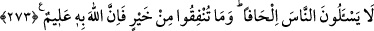

Yapacağınız hayırları ancak Allah’ın rızasını kazanmak için yapmalısınız. Hayır
olarak verdiğiniz ne varsa, karşılığı size tam olarak verilir ve asla haksızlığa
uğratılmazsınız.
Yâ Muhammed! Onlara iyiliklerden emrolunduklarını yaptırmak ve nehyolundukları
kötülüklerden de sakındırmak sana vâcib değildir. Sana düşen, sana indirilen vahiy ile
iyiliğe irşad ve ona teşvik etmen ve kötülüklerden de sakınmalarını söylemendir.
Burada hitap Peygamber Efendimiz’e ise de bütün ehl-i İslâm’ı kapsamına almaktadır.
Ancak Allah Teâlâ iyiliği seçen, ona tâbi olan ve anlatılanlardan öğüt alanlardan
dilediğini hidâyete eriştirir, teblîğ etmek ve açıklamak Peygamberimiz’e, tevfik ise
sâdece Allah’a âiddir.
Fakîr müslümanlar çoğalınca Rasûlullah (s.a.), müslümanları müşriklere sadaka
vermekten nehyetti. Böylece onların, sadakaya olan ihtiyaçları sebebiyle İslâm’a
girmelerini istedi. Bunun üzerine bu âyet nâzil oldu. Yani İslâm’a girmeleri için onlara
sadaka verilmesini yasaklaman gerekmez. Çünkü onları hidâyete erdirmek sana âid
değildir.
Burada “küfür” illetinin nâfile sadaka vermeye engel teşkil etmediğine işâret vardır.
Kâfirlere zekât verilmesinin câiz olup olmadığı ise ihtilâflıdır. Ebû Hanîfe, kâfirlere
zekât verilmesini tecvîz etmiştir. Başkaları ise buna cevâz vermemişlerdir. Tasaddukta
bulunduğunuz her mal sizin içindir. Başkası ondan faydalanamaz. Bu sebeple verdiğiniz
kimseye eziyet etmeyin; başa kakmayın, âdî ve değersiz olanı vermeyin. Diğer bir mânâ
şöyledir: Verdiğiniz şeyin dînî yönden menfaati sadece sizindir. Fakîrlerin bunda bir
hakları yoktur. O halde kâfir olmaları sebebiyle müşrik fakîrlere vermekten
men’etmeyiniz.
Âlimlerden birisi şöyle demiştir: Verdiğin kimse halkın en şerlisi dahî olsa, infâk
ettiğinin sevâbı sana yazılır.
Verdiğinizi sadece Allah’ın rızasını kazanmak için vereceksiniz. Başka herhangi bir
niyet ve maksadla değil. Ancak bu şekilde sizin menfaatinize olur. O halde size ne
oluyor ki verdiğinizi başa kakıyorsunuz. Allah için verilmesi güzel olmayan âdî ve
değersiz şeyleri veriyorsunuz.
İster zımmîye veya başkasına olsun, yaptığınız infâkın ecir ve sevâbı kat kat ödenir.
Bunun için, infâkı en güzel ve en iyi bir şekilde yapmanız husûsunda hiçbir mâzeret
yoktur. Eğer istenilen tarzda infâkta bulunursanız size vaad edilen sevaptan hiçbir şey
eksiltilmez ve asla zulme uğramazsınız.